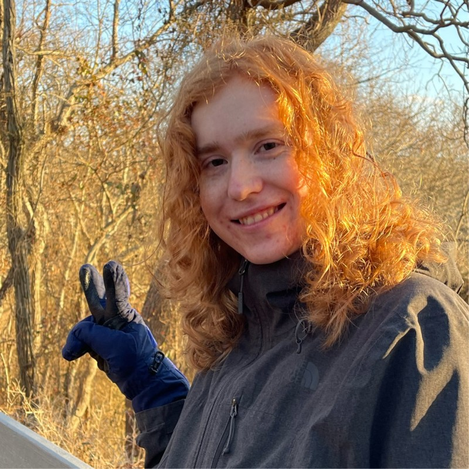

Soup Cobb
This is my website!
Take an image of my cat, Mateo, with you while you scroll.

Additionally here is an image of myself, seems like a standard thing to have on a personal website these days.
This is my website!
Take an image of my cat, Mateo, with you while you scroll.

Additionally here is an image of myself, seems like a standard thing to have on a personal website these days.
Hi, I'm Soup! I'm a graduate student at Michigan Technological University working on my PhD in Computer Science.
Unsurprisingly, I also write software in my freetime, some of it can be seen on my GitHub (contacts page).
Besides software, I also play games in my spare time and make niche edits for my friends using software such as
GIMP or Kdenlive. I'm also a big fan of cats, especially my special boy Mateo.
Some extra info:
- Big fan of C#.
- I run NixOS on all of my main machines!
- Big fan of Deadlock, I find the characters and aesthetics incredibly well done.
This website is pure html and css, so it loads very quicky while also providing all needed content. I also see it as a living document so expect changes frequently in content and aesthetics.